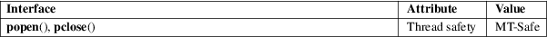

popen, pclose − pipe stream to or from a process
Standard C library (libc, −lc)
#include <stdio.h>
FILE
*popen(const char *command, const char
*type);
int pclose(FILE *stream);
Feature Test Macro Requirements for glibc (see feature_test_macros(7)):
popen(),
pclose():
_POSIX_C_SOURCE >= 2
|| /* glibc <= 2.19: */ _BSD_SOURCE || _SVID_SOURCE
The popen() function opens a process by creating a pipe, forking, and invoking the shell. Since a pipe is by definition unidirectional, the type argument may specify only reading or writing, not both; the resulting stream is correspondingly read-only or write-only.
The command argument is a pointer to a null-terminated string containing a shell command line. This command is passed to /bin/sh using the −c flag; interpretation, if any, is performed by the shell.
The type argument is a pointer to a null-terminated string which must contain either the letter 'r' for reading or the letter 'w' for writing. Since glibc 2.9, this argument can additionally include the letter 'e', which causes the close-on-exec flag (FD_CLOEXEC) to be set on the underlying file descriptor; see the description of the O_CLOEXEC flag in open(2) for reasons why this may be useful.
The return value from popen() is a normal standard I/O stream in all respects save that it must be closed with pclose() rather than fclose(3). Writing to such a stream writes to the standard input of the command; the command’s standard output is the same as that of the process that called popen(), unless this is altered by the command itself. Conversely, reading from the stream reads the command’s standard output, and the command’s standard input is the same as that of the process that called popen().
Note that output popen() streams are block buffered by default.
The pclose() function waits for the associated process to terminate and returns the exit status of the command as returned by wait4(2).
popen(): on success, returns a pointer to an open stream that can be used to read or write to the pipe; if the fork(2) or pipe(2) calls fail, or if the function cannot allocate memory, NULL is returned.
pclose(): on success, returns the exit status of the command; if wait4(2) returns an error, or some other error is detected, −1 is returned.
On failure, both functions set errno to indicate the error.
The popen() function does not set errno if memory allocation fails. If the underlying fork(2) or pipe(2) fails, errno is set to indicate the error. If the type argument is invalid, and this condition is detected, errno is set to EINVAL.
If pclose() cannot obtain the child status, errno is set to ECHILD.
For an explanation of the terms used in this section, see attributes(7).

The 'e' value for type is a Linux extension.
POSIX.1-2008.
POSIX.1-2001.
Carefully read Caveats in system(3).
Since the standard input of a command opened for reading shares its seek offset with the process that called popen(), if the original process has done a buffered read, the command’s input position may not be as expected. Similarly, the output from a command opened for writing may become intermingled with that of the original process. The latter can be avoided by calling fflush(3) before popen().
Failure to execute the shell is indistinguishable from the shell’s failure to execute command, or an immediate exit of the command. The only hint is an exit status of 127.
sh(1), fork(2), pipe(2), wait4(2), fclose(3), fflush(3), fopen(3), stdio(3), system(3)